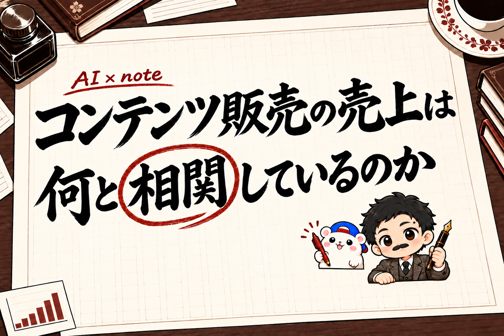

コンテンツ販売の売上と相関していたのは、インプでも、いいねでもなく「プロフの閲覧」でした。
コンテンツ販売(note・Brain・自分のサイトで教材を売ること)の売上は、何と相関しているのか(一緒に増えたり減ったりしているのか)。
45日分の売上と、X・note・ブログ・Substack・ショート動画の数字を、AIに日ごとにそろえさせて調べました。
結果は3行です。
- インプ・いいね・保存は、時期のずれを除くと、売上とほぼ関係なかった
- 残ったのは「プロフの閲覧」。多い日は、少ない日の4.5倍売れていた
- プロフを見た人が買っていたのは、リンク欄ではなく固定ポストから
なので、この結果のとおりに、うちのXのプロフと固定ポストをその日のうちに直しました。
調べたことと、直したことを、両方書きます。
この記事を書いた人

この記事は、フォロワーゼロからコンテンツ販売を始めて、2ヶ月で教材の利益101.5万円(手取り)を出したきくりんが書いています。
今回は、その売上とSNSの数字を、AIに45日分そろえさせて比べました。
1. 調べたこと
| 比べた数字 | 出どころ |
|---|---|
| 売れた部数・売上 | 販売の台帳(70部・103.2万円) |
| Xのインプ・いいね・保存・プロフの閲覧・フォロー | X API(3つのアカウント) |
| ブログに来た人・どこから来たか | Googleアナリティクス |
| noteのいいね | noteの公開データ |
| ショート動画の再生 | YouTube |
ぼくがAIに頼んだのは、ひと言だけです。
「売上と何が一緒に動いているか、いろんな切り口で調べて」
データ集めから計算まで、AI(Claude Code)がやりました。
API(サービスどうしをつなぐ窓口)やアナリティクスの使い方は、各サービスの規約を確かめたうえで、ご自身の責任でお使いください。
2. インプ・いいね・保存は、時期のずれを除くと消えた
素のままで比べると、インプが多い日は、少ない日の5.3倍売れていました。
いいねは6.5倍。
これだけ見ると「インプを増やせば売れる」と思えます。
でも、これは時期のずれでした。
発信が伸びていた時期は、売上も多かった。
落ちた時期は、どちらも少なかった。
それだけで、一緒に動いて見えていたんです。
同じ時期どうしで比べ直すと、こうなりました。
| 数字 | 多い日 ÷ 少ない日(素のまま) | 同じ時期どうしで |
|---|---|---|
| インプ | 5.3倍 | 0.9倍 |
| いいね | 6.5倍 | 1.7倍 |
| 保存 | 1.9倍 | 0.9倍 |
インプと保存は、1倍を下回りました。
同じ時期の中では、インプが多い日に売れているわけではありません。
保存されるのは「あとで使える情報」です。
保存して、そこで終わります。
3. 残ったのは「プロフの閲覧」だけ
| 数字 | 多い日 ÷ 少ない日(素のまま) | 同じ時期どうしで |
|---|---|---|
| プロフの閲覧 | 21倍 | 4.5倍 |
| 販売ページへの訪問 | 2.8倍 | 4.3倍 |
時期のずれを除いても、はっきり残ったのはプロフの閲覧でした。
(販売ページへの訪問は、買う人が必ず通るので、残って当たり前です)
プロフを開くのは、ポストを読んで「この人、何者？」と思った人です。
その人の数が、買う人の数に近かった。
インプは「届いた数」。
プロフの閲覧は「気になった数」です。
売上と一緒に動くのは、後ろのほうでした。
4. 買う人はどこから来るか
| 来たところ | 販売ページへ進んだ割合 |
|---|---|
| note | 47% |
| X | 27% |
| Google検索 | 4% |
ブログに来た人のうち、そのまま販売ページへ進んだ割合です。
数がいちばん多いのはXでした。
でも、来た人の本気度がいちばん高いのはnoteです。
noteから来た人の、およそ2人に1人が販売ページを開いています。
いっぽうで、まだ売上につながっていないものもありました。
- Substack: 72日でブログへの訪問19回・販売0
- ショート動画: YouTubeで58本・約1.4万回再生。でもブログへの訪問は増えず、販売0
ショート動画は始めて2週間なので、「効き目がない」とはまだ言えません。
見られてはいます。
動画から教材への道が、まだないだけかもしれません。
前に、売れた教材88部の流入経路を1部ずつ調べた記事も書きました。
そのときも、着地はブログでした。

5. プロフを見た人は、固定ポストで買っていた
では、プロフを見た人は、そこから何をしていたのか。
プロフの画面には、3つの入口があります。
| プロフの入口 | 販売ページへの訪問 | 売れた部数 |
|---|---|---|
| 固定ポスト(販売ページへ直接) | 116回 | 3部 |
| 無料特典・LINE・メール講座 | 90回 | 0部 |
| 自己紹介の文 | — | — |
売れたのは、固定ポストからでした。
自分のサイトで売れて流入経路が分かった27部のうち、Xから来たのは12部。
その4分の1が、固定ポストです。
無料特典やメール講座の入口は、約40日で30人の登録でした。
「あとで買う」入口なので、その日の売上には出にくい。
いまの規模では、固定ポストで中身を見せて、直接売るほうが結果が出ていました。
流れにすると、こうです。
- ポストで、インプを取る
- 「何者？」と思った人が、プロフを開く
- 固定ポストで中身を見て、販売ページへ進む
プロフを見に来る人を増やすのは、ポストの仕事。
来た人を販売につなぐのは、固定ポストの仕事です。
6. うちのプロフと固定ポストを、こう直した
売れた固定ポストに共通していたのは、5つでした。
- 1行目で、読む人の得を言い切る
- 中身を箇条書きで見せる
- 無料で読める部分を書く
- 価格と日付を書く
- 販売ページへ直接リンクする
この5つで、自分の3つのアカウントを見直しました。
| アカウント | 見つかったこと | 直したこと |
|---|---|---|
| AI | 固定ポストが3週間以上前のまま・数字が古い・中身と価格がない | 固定ポストを作り直した・自己紹介の最後に1行足した |
| 2つめ | 固定ポストの価格が古いまま | 価格と日付を直して出し直した |
| 3つめ | 5つの条件どおり | そのまま |
いちばん直すところが多かったのは、このAIのアカウントでした。
前の固定ポストは、販売ページへのリンクが「もっと見る」の下にありました。
見えている部分の最後は、発売の告知ポストの引用です。
そこから販売ページへ来た人は、0人でした。
作り直した固定ポストが、これです。
https://x.com/kikurin_ai/status/2120615469501854198
固定ポストは、作った日が古くなるほど、中身と価格がずれていきます。
あなたも、最後に直した日を見てみてください。
結果は、1週間後にまた数えます。
7. この調査で分からないこと
| 分からないこと | 理由 |
|---|---|
| noteのページビュー | ログインしないと見られない |
| noteとBrainで買った人がどこから来たか | 販売サイトの仕組みで取れない |
| Instagram・TikTokの再生 | 記録していなかった |
45日・教材41部分の数字です。
弱い相関は、「ある」とも「ない」とも言い切れません。
はっきり言えるのは、インプは同じ時期の中で売上と一緒に動いていなかったことと、プロフの閲覧は動いていたことです。
前に、Xで伸びるポストを1,302本調べた記事も書きました。
インプを取るのは、こちらの話です。

まとめ
コンテンツ販売の45日分の売上を、AIに調べさせて分かったことは3つです。
- インプ・いいね・保存を追いかけない(同じ時期の中では、売上と一緒に動いていなかった)
- 「この人、何者？」と思わせて、プロフに呼ぶ(プロフの閲覧が多い日は4.5倍売れた)
- 固定ポストで、中身を見せて直接売る(プロフから売れたのは固定ポストだけ)
インプが増えても売れない日は、来た人が次に読むものを見直すところです。
あなたの固定ポスト、最後に直したのはいつですか？
▼ネタの作り方から、AIで教材にまとめて売るまで、やったことを1冊にまとめてあります
フォロワーゼロから利益95.8万円まで、54日間の数字と失敗と手順を、全部書いた教科書です。
録音から記事、教材、販売ページ、売れたあとの台帳まで。うちで毎日使っているツールも付録に入れました。
『noteから始める「AI×◯◯」コンテンツ販売の教科書｜フォロワーゼロから利益95.8万円』


販売価格は3部売れるごとに2,000円ずつ値上がりします（上限あり）。内容・最新価格は販売ページをご確認ください。